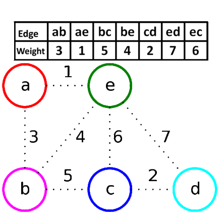

| ALGORITMOS |
| DEFINICION | combinación de decisiones que maximice la efectividad total, al descomponer el problema en etapas, las que pueden ser completadas por una o más formas (estados), y enlazando cada etapa a través de cálculos recursivos. La Programación Dinámica nos permite resolver un problema hallando soluciones sucesivas a sub-problemas de menor tamaño y ligándolas como solución optima del problema. Consiste en solucionar el presente suponiendo que en cada etapa futura siempre se tomaran las decisiones correctas. 
|
| ALGORITMOS DE BUSQUEDA | |
| ALGORITMOS DE ORDENAMIENTO | |
| PROGRAMACION DINÁMICA | |
| ALGORITMOS VORACES | |
| ALGORITMOS PROBABILISTICOS |